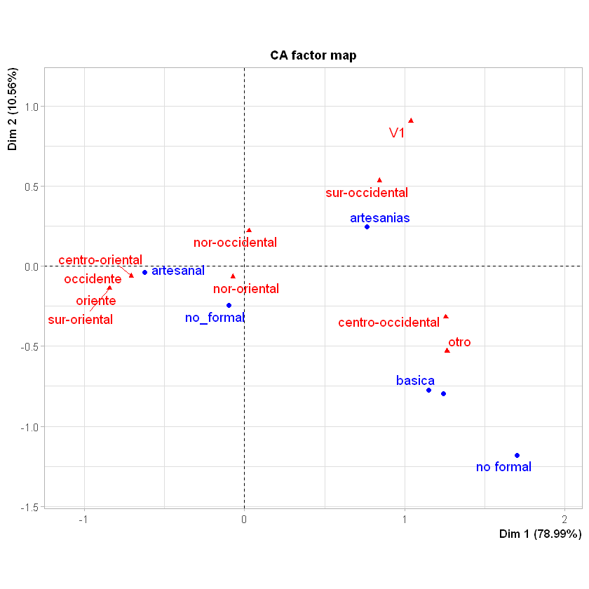

Práctica 6: Análisis y selección de portafolios¶
Obtención del portafolio eficiente o de mínima varianza
Una vez obtenida la frontera eficiente, tal como se realizó en
Optimización de
portafolios,
es posible determinar cuales son los pesos óptimos, a partir del
portafolio de mínima varianza (punto más a la izquierda de la frontera
eficiente). Para ello, se cra un objeto de clase fPortfolio llamado
Portafolio_Efi, que contendrá la salida de la función
efficientPortfolio(), a la cual se le ingresa los siguientes
argumentos: * El objeto al que se le aplicará el modelo para determinar
el portafolio eficiente, que en este caso serían los rendimientos como
una serie de tiempo. por ello, se hace uso de la función
as.timeSeries() sobre Rdtos[-1,]. * El argumento con el que se
configura la optimización spec = que va a ser igual a las
escificaciones que se ajustaron antes de crear la frontera eficiente y
que se llamó espcartera. * la restricción de no negatividad que
también se determinó antes de configurar la frontera como la variable
constraints, donde se indicaba se permiten posciones en largo,pero
no ventas en corto "LongOnly".
Estqa función permite visualizar los argumentos del modelo Title:
los pesos Portfolio Weights:, el riesgo estimado
Covariance Risk Budgets: y los retornos esperados
Target Returns and Risks:.
Para obtener únicamente los pesos del portafolio eficiente,se utiliza la
función getWeights() sobre el objeto Portafolio_Efi, y así se
obterndrá el vector de los pesos para el portafolio de mínima varianza.
En este caso se debe invertir un 31.43% en BABA, un 0% en APPL un 66.69%
en WMT un 0% en WBA, un 1.88% en TSLA y 0% en PEP.
Portafolio_Efi= efficientPortfolio(as.timeSeries(Rdtos[-1,]),spec = espcartera,constraints)
Portafolio_Efi
W_efi=getWeights(Portafolio_Efi)
W_efi
Title:
MV Efficient Portfolio
Estimator: covEstimator
Solver: solveRquadprog
Optimize: minRisk
Constraints:
Portfolio Weights:
BABA AAPL WMT WBA TSLA PEP
0.3143 0.0000 0.6669 0.0000 0.0188 0.0000
Covariance Risk Budgets:
BABA AAPL WMT WBA TSLA PEP
0.3143 0.0000 0.6669 0.0000 0.0188 0.0000
Target Returns and Risks:
mean Cov CVaR VaR
0.0006 0.0148 0.0343 0.0174
Description:
Wed Apr 01 19:18:37 2020 by user: Natalia
- BABA
- 0.314314558226735
- AAPL
- 0
- WMT
- 0.666878313798239
- WBA
- 0
- TSLA
- 0.0188071279750264
- PEP
- 0
Portafolio tangente a la Línea del Mercado de Capitales
Este portafolio tangente (punto rojo en la forntera eficiente) se
determina de forma similar al anterior, por medio de la función
tangencyPortfolio() y los mismos argumentos mencionados.
Para conocer los pesos del portafolio tangente, se aplica la misma
función getWeights(), pero esta vez, sobre el objeto
Portafolio_tang, y se obtendrá el vector de pesos.
Portafolio_tang = tangencyPortfolio(as.timeSeries(Rdtos[-1,]),spec = espcartera,constraints)
Portafolio_tang
W_tang=getWeights(Portafolio_tang)
W_tang
Title:
MV Tangency Portfolio
Estimator: covEstimator
Solver: solveRquadprog
Optimize: minRisk
Constraints:
Portfolio Weights:
BABA AAPL WMT WBA TSLA PEP
0.0000 0.7407 0.1135 0.0000 0.1458 0.0000
Covariance Risk Budgets:
BABA AAPL WMT WBA TSLA PEP
0.0000 0.7599 0.0486 0.0000 0.1915 0.0000
Target Returns and Risks:
mean Cov CVaR VaR
0.0014 0.0221 0.0587 0.0334
Description:
Wed Apr 01 19:18:37 2020 by user: Natalia
- BABA
- 0
- AAPL
- 0.740694129080433
- WMT
- 0.113543867783967
- WBA
- 0
- TSLA
- 0.145762003135599
- PEP
- 0
Ratio de Sharpe para portafolios
El Ratio de Sharpe que permite medir el premio por el riego asumido al invertir en un instrumento no seguro. Por tanto el portafolio con mayor ratio será preferido por el inversionista.
El ratio de Sharpe se determina por medio de la fórmula:
Para ello se requiere extraer el rendimiento de cada uno de los
portafolios (eficiente y tangente), por merdio de la función
getTargetReturn() y los riesgos (\(\sigma\)), con la función
getTargetRisk(), de esta forma, se obtiene vectores que contienen la
media de los rendimientos mu y el vector de riesgos de donde se
extrae sigma que se encuentra en la posición 2 del vector
Riskport_efi[2]. Ya con estos datos, se procede a calcular la
fórmula anterior.
#Ratio Sharpe portafolio eficiente:
Rport_efi=getTargetReturn(Portafolio_Efi)
Rport_efi
Riskport_efi= getTargetRisk(Portafolio_Efi)
Riskport_efi
sigma_efi=Riskport_efi[2]
sigma_efi
Sharpe_efi=(Rport_efi[2]-rf)/sigma_efi
Sharpe_efi
- mean
- 0.00059411834022739
- mu
- 0.00059411834022739
- Cov
- 0.014768226056284
- Sigma
- 0.014768226056284
- CVaR
- 0.0342943590049817
- VaR
- 0.0174098349373304
De forma similar se realiza el realiza el Ratio de Sharpe para el portafolio tangente:
Rport_tang=getTargetReturn(Portafolio_tang)
Rport_tang
Riskport_tang= getTargetRisk(Portafolio_tang)
Riskport_tang
sigma_tang=Riskport_tang[2]
sigma_tang
Sharpe_tang=(Rport_tang[2]-rf)/sigma_tang
Sharpe_tang
- mean
- 0.00142297402065197
- mu
- 0.00142297402065197
- Cov
- 0.0220625645106896
- Sigma
- 0.0220625645106896
- CVaR
- 0.0587050975805006
- VaR
- 0.0334424983815035
Gráficos de Torta para visualizar los pesos de los portafolios
Una forma sencilla de visulaizar los pesos en los que se va a repartir
el recurso, es realizando un gráfico cilcular o comunmente llamado
gráfico de torta. la función que se utiliza es weightsPie(), sobre
el objeto Portafolio_Efi y con argumentos de configuración del
gráfico como color col= y tamaño de la torta radius=. con la
función mtext(), se configura el título del gráfico, que se encentra
arriba a la izquierda.
#torta portafolio eficiente
win.graph(15,13)
weightsPie(Portafolio_Efi, col= col, radius = 0.5)
mtext(text = "portafolio eficiente", side = 3, line = 1.5, font = 1, cex = 0.7, adj = 0)
{kind=link}
De forma similar se contruye el gráfico circular para el portafolio tangente.
#torta portafolio tangente
win.graph(15,13)
weightsPie(Portafolio_tang, col= col, radius = 0.5)
mtext(text = "portafolio tangente", side = 3, line = 1.5, font = 1, cex = 0.7, adj = 0)

Beta del portafolio¶
Obtención de los rendimientos del portafolio elegido¶
Por lo genral, el portafolio tangente es el portafolio que se elige como mejor premio para el inversionista. A este, se le debe realizar un análisis de sensibilidad para determinar, cuál es la cantidad de riesgo sistemático, este riesgo se determina por medio del cálculo del Beta, que se consigue contrastando mediante una regresión lineal simple, todos los rendiemientos diarios del portafolio tangente contra los rendimientos diarios del mercado. Esta regresión tiene el comportamiento de una línea recta por lo que la ecuación que la determinaes es la siguiente:
\(b\) que acompaña la \(x\) es la pendiente, a su vez, puede ser tratada como el riesgo sistemático del portafolio contra el mercado. De esta forma, si \(\beta < 1\) se considera que el portafolio es menos sensible a los cambios en el mercado, por el contrario, si \(\beta > 1\), el portafolio tendrá mayor sensibilidad al mercado. el signo del coeficiente determinará la relación que existe entre el mercado y el portafolio, para \(\beta_1\) positivo se espera una relación directamente proporcional, y para \(\beta_1\) negativo, una relación inversamente proporcional.
Lo primero que se realiza es obetener los rendimientos diarios del
portafolio tangente, para ello, se utiliza un ciclo for que recorra
todas las filas [i] de la matríz de rendimientos nrow(Rdtos) y
realice la suma producto con el vector de los pesos del portafolio
tangente W_tang (objeto creado anteriormente)
#rendimientos del portafolio
rdto_port_tang= vector()
for(i in 1:nrow(Rdtos)){
rdto_port_tang[i]= sum(Rdtos[i,]%*%W_tang)
}
head(rdto_port_tang,20)
- -0.00366527191926463
- 0.00126793777500628
- 0.00199084987075304
- 0.00363105533713878
- 0.000667874740728296
- -0.0103097984945859
- 0.0101384580243651
- 0.00687891201111615
- -0.000513275999864655
- 0.00965641448330918
- -0.00394629951575977
- -0.00538383463217754
- -0.0011157625438134
- -0.00535828297468948
- -0.00452481419886013
- -0.00937858103130249
- 0.00584692105102535
- 0.029692852222876
- 0.00431077449850838
- 0.0068800137317509
Para conocer el comportamiento del mercado, se deben obtener los datos de cotización del índice S&P 500. es importante aclarar que la elección del índice dependerá de las acciones con las que se encuentre trabajando, si se tienen acciones de USA, pueden utilizar SP500, DOW-JONES, NYSE o NASDAQ (si pertenecen a estas bolsas). Si son acciones colombianas, se deberá realizar con el COLCAP, o por ejemplo Alemania, con el índice DAX.
En este caso se obtienen los datos del SP500 y se crea el DF con los
redimientos Rdto_mdo, tal como se explica en Obtención y Análisis
de Rendimientos
R
#Rdtos del mercado
getSymbols.yahoo(c('^GSPC'),env=globalenv(), from = "2019-02-12",to = Sys.Date())
SP500= GSPC$GSPC.Adjusted
Rdto_mdo=diff(log(SP500))
Rdto_mdo= Rdto_mdo[-1]
Una vez obtenidos los rendimientos del mercado y del portafolio, se
porcede al ajuste de un modelo de regresión lineal, con la función
lm(x~y), donde \(x\) representa la variable independiente,
siendo los movimientos del mercado y \(y\) la dependiente que
corresponde a los rendimientos del portafolio.
Con la función summary() se obitienen los coeficientes de la
regresión \(\beta_0\) y \(\beta_1\), que corresponde al
intercepto y la pendiente respectivamente. Para este caso se observan en
la columna Estimate. Dado que el coficiente que interesa es el que
acompaña a rdto_port_tang 0.7330308, se extrae el coeficiente con
Beta=regresion$coefficients[2]. En este caso particular el
portafolio es menos sesible a los cambios de mercado, es decir, por un
cambio de un 1% en el rendimiento del mercado, el rendimiento del
portafolio subirá un 0.73%.
Para visualizar el gráfico de dispersión, se hace uso de la función
plot(), contrastando el rendimiento del mercado Rdto_mdo contra
el rendimiento del portafolio rdto_port_tang, ambos ingresados como
vestores numéricos as.numeric(). Para la línea de la regresión se
utiliza la función abline()
#Regresión para obtener el Beta del portafolio
regresion=lm(Rdto_mdo~rdto_port_tang)
summary(regresion)
Beta=regresion$coefficients[2]
#Gráfica Dispersión
plot(as.numeric(Rdto_mdo),as.numeric(rdto_port_tang), xlab='Rendimiento Mercado', ylab='Rendimiento Cartera', main="Rdto Mercado vs Rdto Cartera")
abline(regresion)
Call:
lm(formula = Rdto_mdo ~ rdto_port_tang)
Residuals:
Min 1Q Median 3Q Max
-0.028985 -0.004045 -0.000233 0.004186 0.035841
Coefficients:
Estimate Std. Error t value Pr(>|t|)
(Intercept) -0.0012409 0.0004893 -2.536 0.0118 *
rdto_port_tang 0.7330308 0.0222104 33.004 <2e-16 *
---
Signif. codes: 0 '*' 0.001 '**' 0.01 '*' 0.05 '.' 0.1 ' ' 1
Residual standard error: 0.008244 on 283 degrees of freedom
Multiple R-squared: 0.7938, Adjusted R-squared: 0.793
F-statistic: 1089 on 1 and 283 DF, p-value: < 2.2e-16

{kind=link}
Ratio de Treynor
Similar al ratio Sharpe, el ratio de Treynor, permite evaluar el premio que se le otorga al inversionista por asumir una porción del riesgo sistemático. De nuevo, entre mayor sea el Ratio de Treynor, mejor será el premio. El ratio de Treynor está determinado por la fórmula:
## Ratio de Treynor
Treynor_tang=(Rport_tang[2]-rf)/Beta
Práctica 6:
Con las acciones tomadas para la práctica # 5, identifique cuáles son los ratios de desempeño y selección para el portafolio tangente y eficiente, es decir, calcule para ambos portafolios:
a. Los pesos exactos de los portafolios
b El ratio de Sharpe
c. El Betha del portafolio
d El ratio de Treynor.